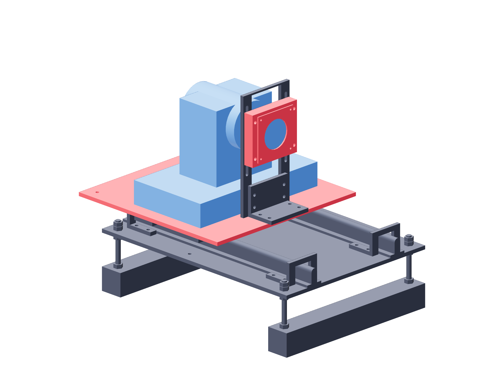

Observation / handling153 / 179
Retract cameras by hand
The camera and lens module travel together by 200 mm. Manual retraction clears the dry workspace and invalidates the old camera calibration.
AddNo new parts
Tools / setup4 mm hex · 8 mm wrench · supported camera service loops

- Stop motion, remove the tube from the handling path and support both camera cables.
- Remove both return bolts, nuts, washers and both metal tubes completely.
- Slide each camera/lens carriage backward by hand until its rear metal stops engage.
- To return, slide forward, reinstall both tube/bolt clamps and recalibrate before recording measurement frames.
Observation scope
These cameras and lens mounts are for dry observation. No live-laser optical barrier or filter is qualified by this assembly.
Ready when
Retraction does not stretch a cable or strike optics, and return clamps are absent during every manual slide. A retained tube/bolt or taut cable blocks safe travel. Stop the hand move and remove the obstruction before continuing.